| 日付 | 2011年11月26日（土） - 2011年11月27日（日） | ||||||
|---|---|---|---|---|---|---|---|
| 山域 | 赤城・榛名 | ||||||
| メンバー | 家族（妻、長女・0歳） | ||||||
| 山行形態 | 子連れ1泊2日ホテル泊 | ||||||
| アクセス | 車 | ||||||
| ルート (Map1) |
|
子持山は群馬県北部に聳える独立峰の古火山で、
JR上越線や関越自動車道からよく目立つ山だ。
しかし、付近には赤城山、榛名山、武尊山などの
有名な山が存在するため、比較的小さな子持山の知名度はあまり高くない。
しかし、麓から望む子持山の姿はなかなか立派で、
前々から登ってみたいと思っていた。
絶好の晴天の週末に、榛名山と合わせて登ってみることにする。
1日目
9:00 5号橋駐車場到着。標高660m。
もうすでに車は結構停まっている。
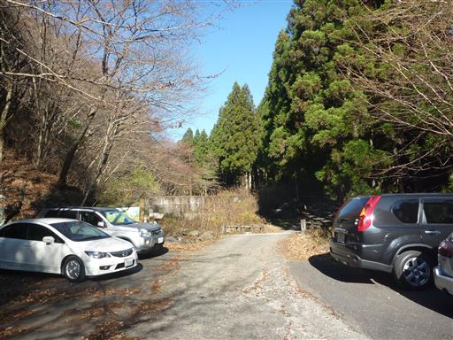
登山道入口付近に子持神社奥ノ院がある。
お参りしてから山に入ることにする。
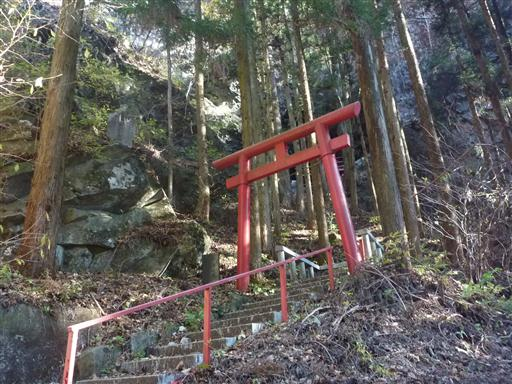
鳥居をくぐった先で階段は封鎖されていて、これ以上近づくことはできない。
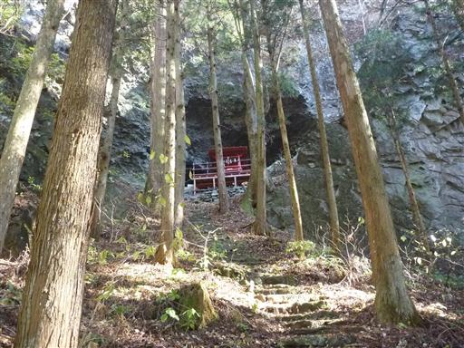
沢沿いの道を少し歩くと、屏風岩が見えてくる。
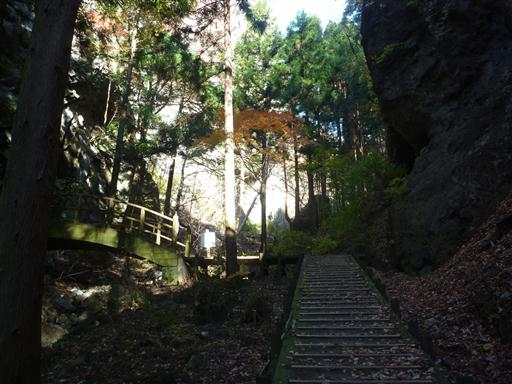
屏風岩に到着。足元に小さな鳥居が置かれている。
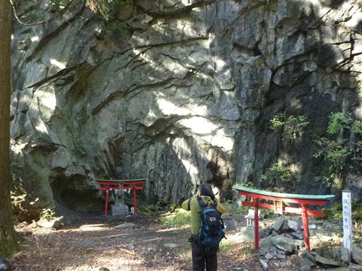
屏風岩を見上げる。かなり大きな岩壁だ。
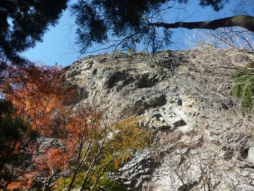
屏風岩には登ることができる。
道は整備されてそうなので登ってみることにする。
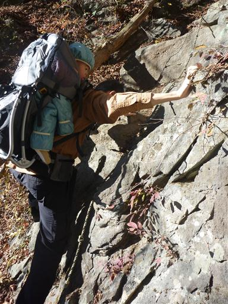
かなり急傾斜の道を登っていく。
足場が悪いため、慎重に登る。
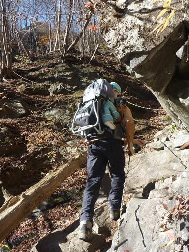
しばらく登ると鎖場と梯子があり、そこを超えると屏風岩の上に立つことができる。
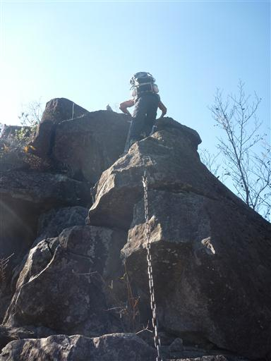
360度の展望が広がる岩なのだが、登山道の入口付近にある標高の低い岩なので、
眼下には大したものが見えない。
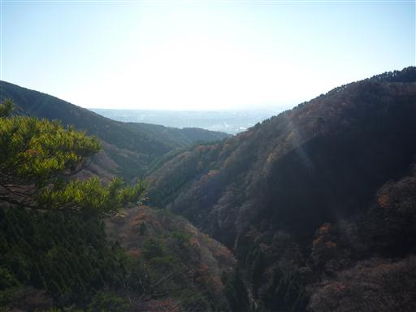
屏風岩の上には石碑が立っている。
奥に見えるひときわ目立つ岩峰は獅子岩だ。

屏風岩を下って沢沿いの登山道を登る予定だったが、
獅子岩から直接尾根道を歩く登山道があったため、そちらを歩くことにする。
地図には載っていない道だが、よく整備されている。
岩がちな、かなりのやせ尾根で、歩くのが楽しい登山道だ。
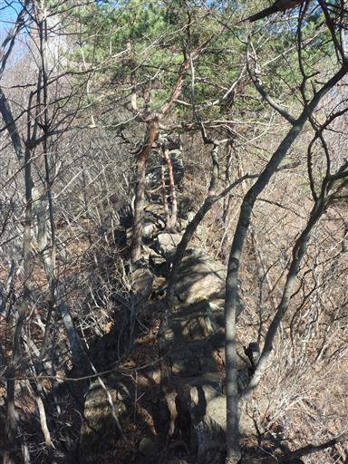
途中で獅子岩の展望が開ける。思った以上に大きな岩峰だ。
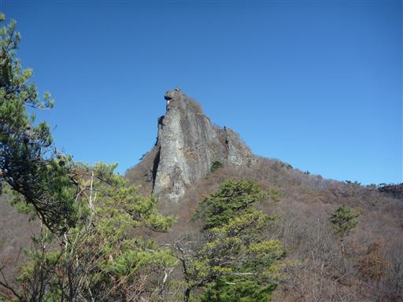
岩壁をよく見ると、ロッククライミングを楽しんでいる人が見える。
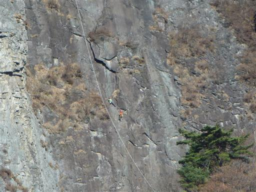
一登りで獅子岩の基部に到着する。見上げるとかなりの迫力だ。
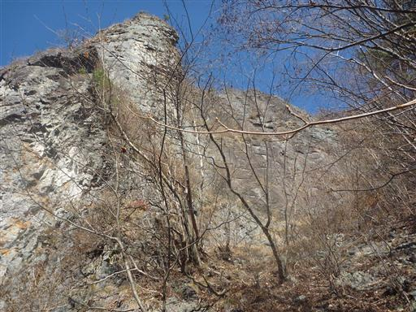
登山道から少し離れたところに展望台があったので行ってみる。
目の前には赤城山を始め、周囲の山々が見渡せる。
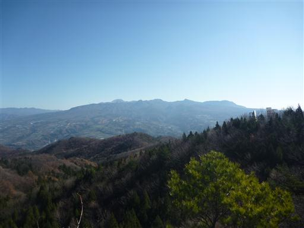
ここからも獅子岩がよく見える。岩壁も青空も非常に美しい。
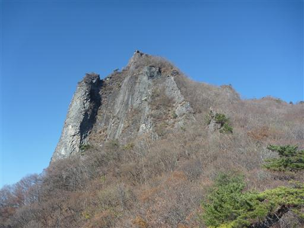
この獅子岩にも道が通じていて、クライミングをしなくても登ることができる。
岩の上部までは梯子が設置されている。
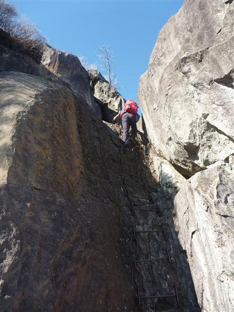
岩の上には「御嶽山神社」と書かれた石碑が立っている。
遮るもののない岩の上は絶好の展望台だ。
左に見えるのは武尊山、右の白いピークは日光白根山だ。
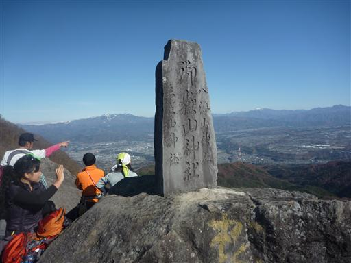
南方に見える複数のピークを連ねた山は一目でそれと分かる榛名山。
その奥に薄らと八ヶ岳も見えている。
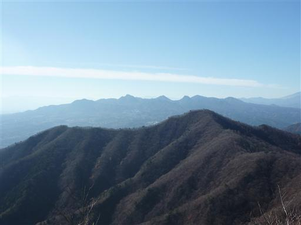
手前に見えるのは以前登った小野子山。子持山と仲良く並んでいる山だ。
その左奥の丸いピークは浅間山、目を凝らすと遠くに北アルプスの白い山々まで微かに見える。
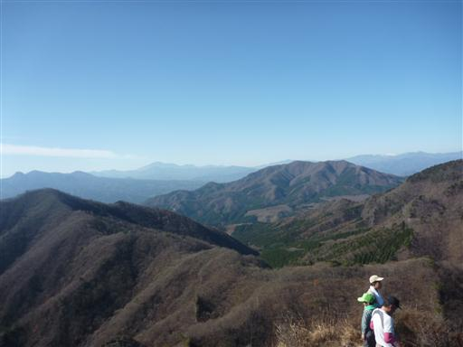
北方にはこれから向かう子持山が見えている。
まだ、かなり距離がありそうだ。
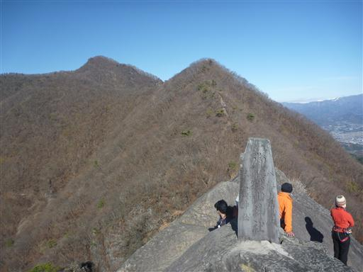
足元に岩壁が2つ見えている。
昔はこちらの尾根と岩壁がつながっていてダムのようになっていたという話を聞く。
周りの人は地元の人が多そうで、皆やたら山に詳しい。
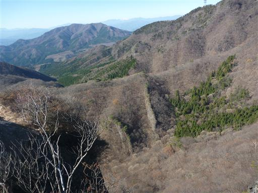
獅子岩からはもと来た道を戻らずにショートカットできる道を選ぶ。
1か所少々難しい岩場を通過する。
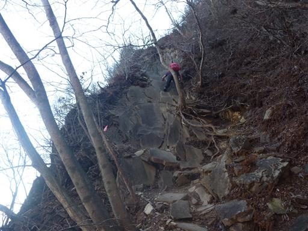
元の登山道に合流すると、あとは子持山山頂を目指すのみ。
岩がちな尾根道が続く。
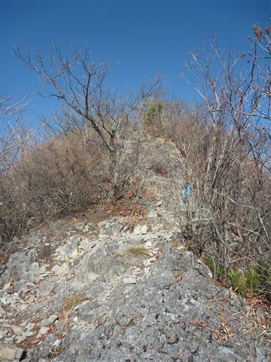
振り返ると獅子岩が大きい。獅子というよりゴリラに見える。
もう岩の上には誰もいないようだ。
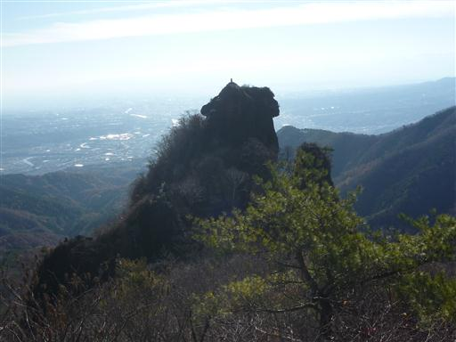
冬枯れの尾根道を登っていく。
寄り道をたくさんしたので少々疲労気味だ。
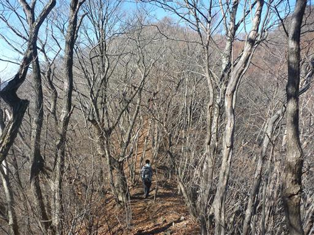
大きなブナの木。枝をいっぱいに広げている。
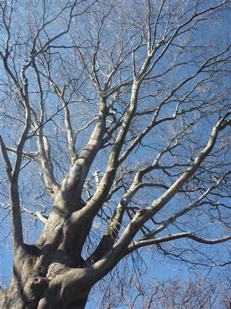
柳木ヶ峰に到着。ここで下山に利用する予定の道と合流する。
山頂まであともう少しだ。
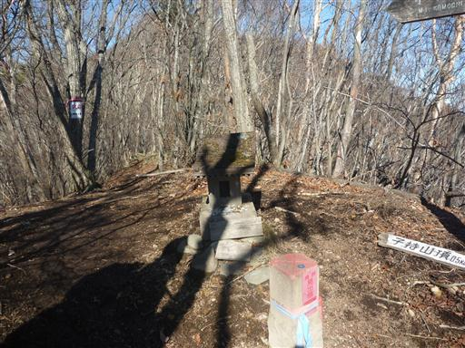
これまで歩いてきた尾根を振り返る。獅子岩はもう遥か下方だ。
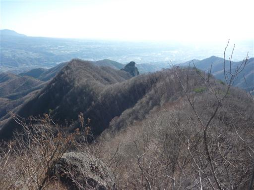
山頂直下は平行に筋が入った不思議な岩が散在している。
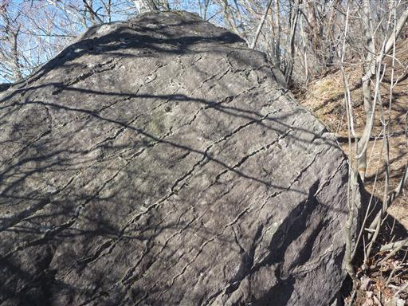
11:43 子持山山頂到着。標高1296m。
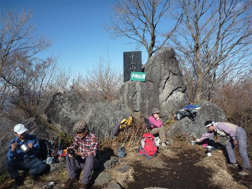
この山には一等三角点が設置されている。
山頂からの大展望を期待していたが、思ったほどではない。
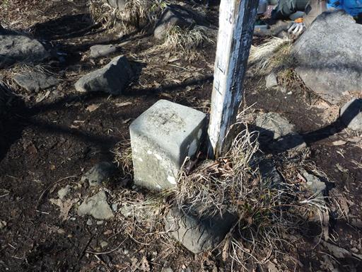
それでも岩の上に登ると、これまで見えなかった谷川連峰の白い山々が見える。
新潟方面は天気が悪そうだ。
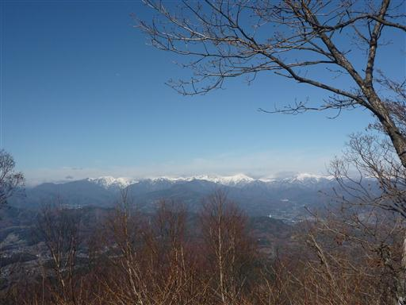
山頂から沼田市街を望む。
利根川の両岸に何段にも連なる見事な河岸段丘が見える。
斜面だけ木が切られずに残っているため、地形がわかりやすい。
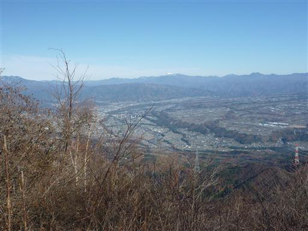
下山は柳木ヶ峰から来た道を分かれ、浅間山経由で下ることにする。
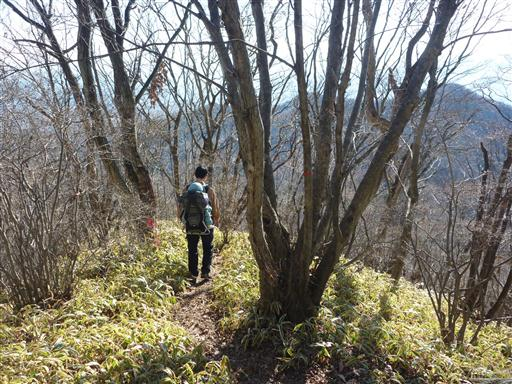
急斜面の登山道が続き、滑って歩きづらい。
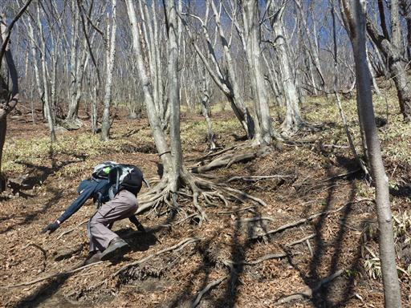
こちらの尾根道からも獅子岩はよく目立つ。
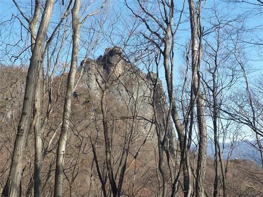
道端に可愛らしい石祠が置かれている。
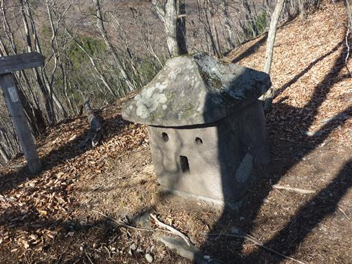
浅間山山頂に到着。地図には展望良好と記載されているがそれほどでもない。
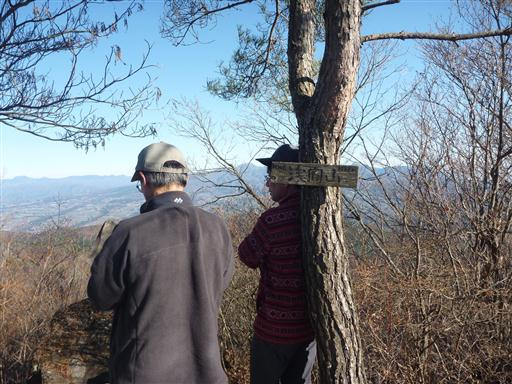
この山頂にも石祠が置かれている。
小さい石の上に絶妙のバランスで置かれている。
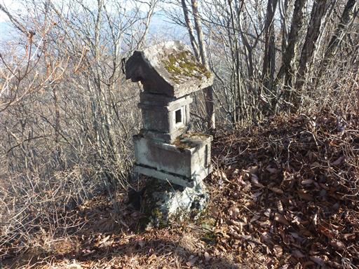
斜めに傾いた今にも倒れてきそうな岩。
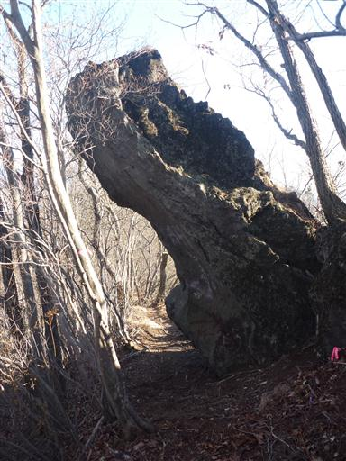
穴の開いたアーチ状の岩。
この山には不思議な岩がいっぱいだ。

5号橋に下山していく道に入っていくと、付近は植林地帯になる。
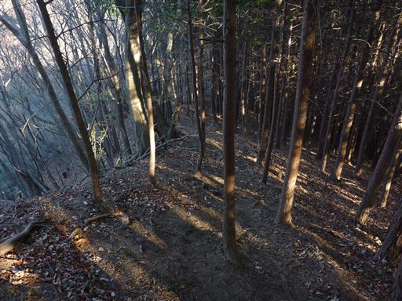
14:33 5号橋駐車場到着。
子持山は登山道が面白く、展望も素晴らしい、非常に良い山だった。
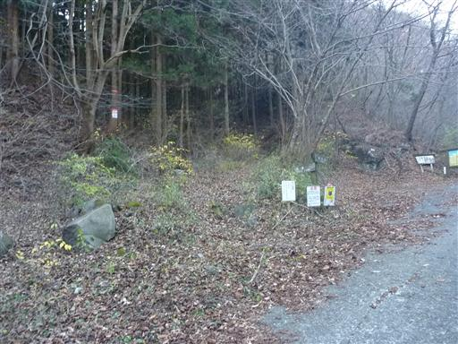
帰りに子持神社に寄ることにする。
創建は不詳らしいが、1000年以上の歴史がある古い神社だ。
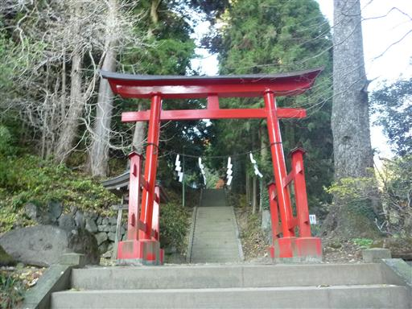
境内はイチョウの葉が積もっている。
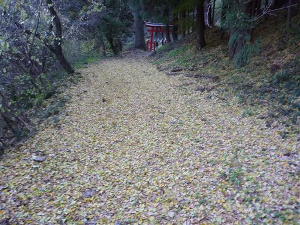
人通りは少なくひっそりとしている。
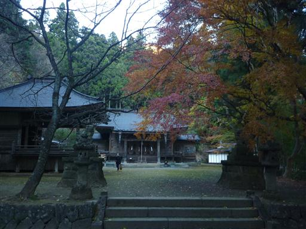
標高が低いので、この辺りはまだかろうじて紅葉が残っている。
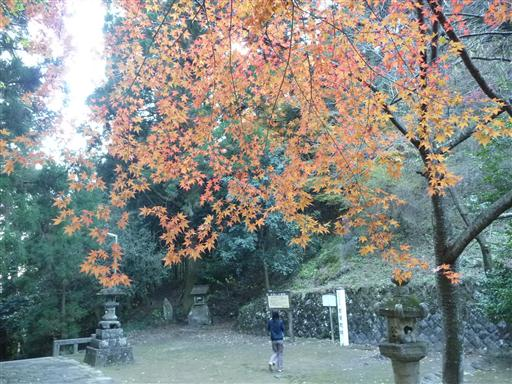
足元にはハキダメギクが咲いている。
小さくてかわいい花だが名前がよくない。
ゴミ捨て場で見つかったのでこの名があるそうだ。
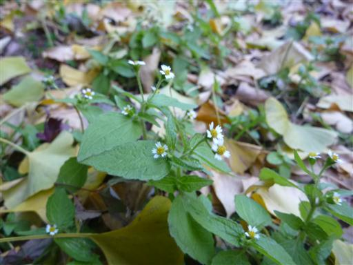
明日は榛名山に行く予定。
直前に立てた計画のため、榛名山麓の伊香保温泉の宿はどこもいっぱい。
渋川駅前のホテルルートイン渋川で一泊する。
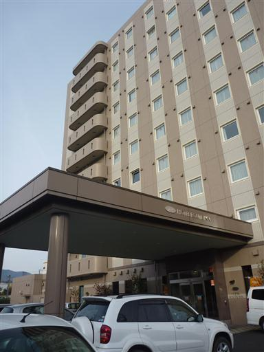